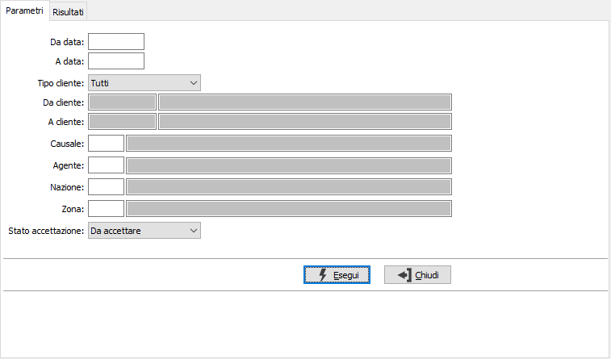
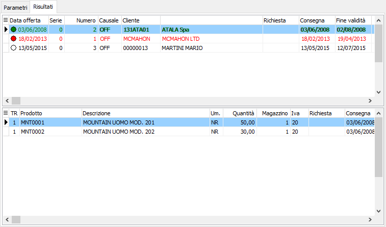
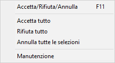

Esito offerte
La procedura consente di definire l’esito dell’offerta (accettata/non accettata) al fine di validarne lo stato, consentendone l’evasione se in configurazione del modulo “Offerte” è presente la spunta sulla opzione “Consenti evasione delle sole offerte accettate”.
La finestra principale si articola su due pagine: una per i parametri di selezione delle offerte e l'altra con il risultato dell'elaborazione; da questa pagina sarà possibile assegnare gli stati di esito .

I parametri sono relativi alla selezione delle offerta ed è possibile selezionare per data offerta, cliente (provvisorio o definitivo oppure entrambi), causale, agente, nazione e zona; è possibile specificare inoltre, se si vogliono visualizzare le offerte da accettare, quelle accettate, quelle non accettate oppure tutte indifferentemente; saranno selezionate comunque solo le offerte ancora da evadere.
La pressione sul pulsante Esegui determina l'avvio dell'elaborazione; se saranno trovati documenti validi verranno riportati i dati derivanti dalle offerte e visualizzati nella pagina risultati, da cui sarà possibile effettuare l'esito.
Questa sezione appare divisa in due parti: la parte superiore che contiene le offerte selezionate e la parte inferiore che mostra le righe dell'offerta su cui siamo posizionati nella parte superiore.


Nella griglia superiore vengono mostrati gli attuali stati delle offerte tramite colori differenti; rosso non accettata, verde accettata, altrimenti da accettare.Tramite il clic destro del mouse si può richiamare il menù mostrato a lato; da questo menù è possibile selezionando una voce, o utilizzando i relativi tasti funzione, determinare l'esito dell'offerta su cui si è posizionati o di tutte le offerte visualizzate, accedere alla manutenzione del documento, esportare il contenuto della griglia. Il tasto funzione F11, oppure il doppio clic sulla griglia o la scelta dal menù, se effettuati in sequenza, cambiano lo stato dell'offerta su cui si è posizionati da accettata, a non accettata a da accettare.
Per effettuare il salvataggio definitivo di quanto impostato è necessario premere il pulsante Salva presente nella Toolbar o il tasto funzione F10.